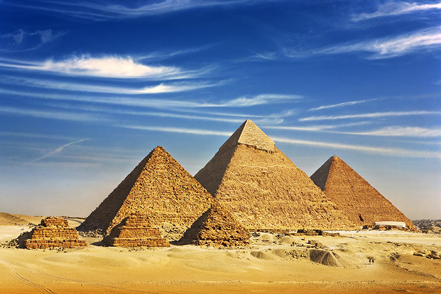

egypt most popular places
The Giza pyramid complex (also called the Giza necropolis) in Egypt is home to the Great Pyramid, the pyramid of Khafre, and the pyramid of Menkaure, along with their associated pyramid complexes and the Great Sphinx. All were built during the Fourth Dynasty of the Old Kingdom of ancient Egypt, between c. 2600 – c. 2500 BC. The site also includes several temples, cemeteries, and the remains of a workers' village
